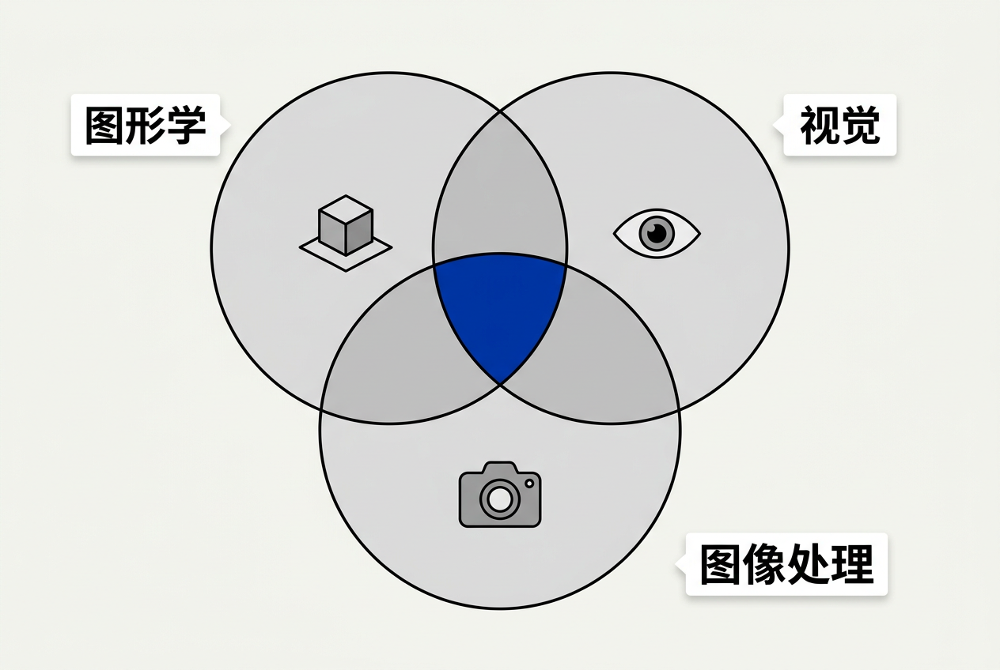
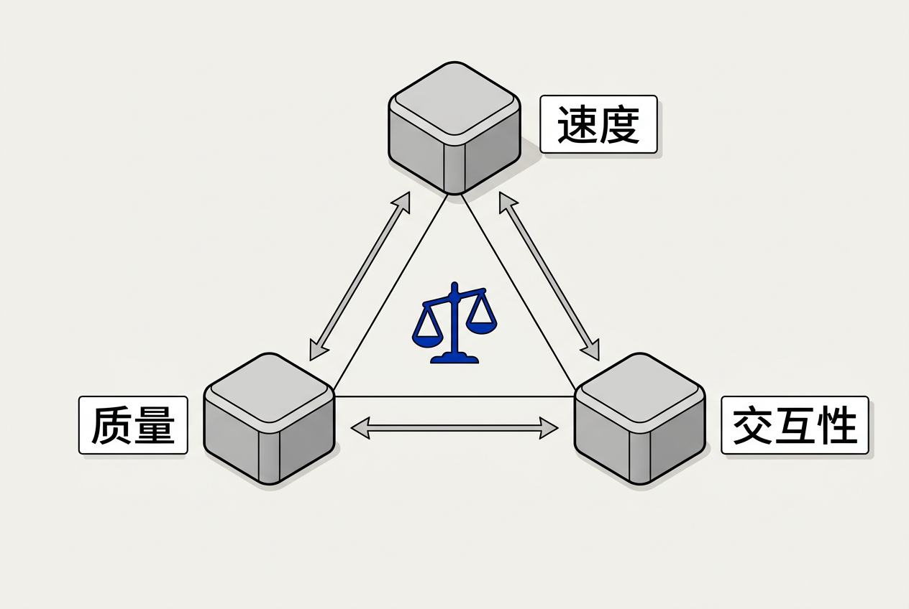
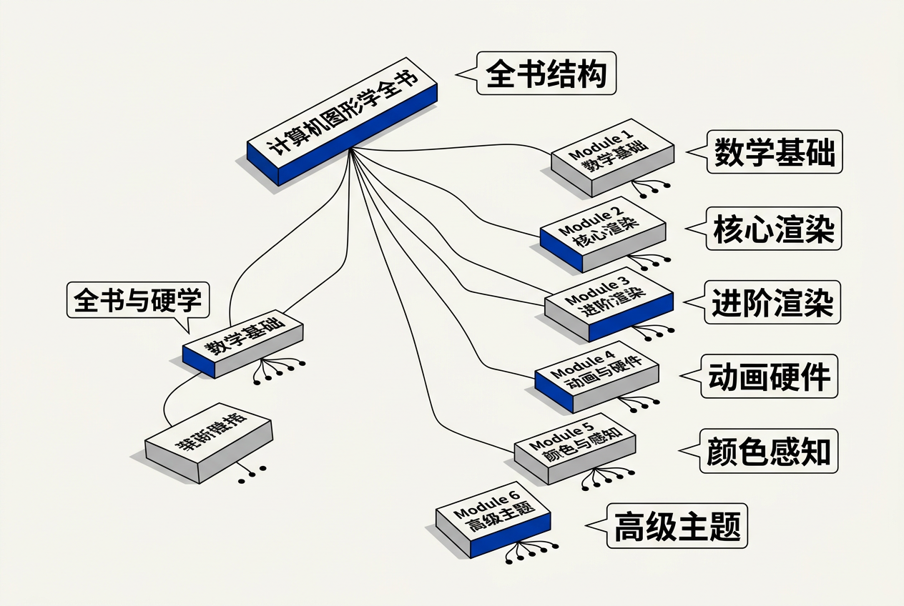

第1章：引言 — 零基础讲义
讲义说明
本讲义基于 Steve Marschner & Peter Shirley 所著《虎书5》第5版第1章（Introduction, p.1-12），由10年经验游戏引擎/渲染工程师执笔。
本章回答一个最基本的问题："计算机图形学是做什么的？"——然后给你一张全书的地图。
本版插画采用 Guizang 材质插画风格重新绘制。
学习目标
读完本章后，你能够：
- 准确说出计算机图形学的定义，及其与计算机视觉、图像处理的区别
- 列举图形学至少4个应用领域，并说明各自的技术约束
- 理解渲染、建模、动画、交互四大研究方向的核心问题
- 解释速度、质量、交互性三要素之间的权衡关系
- 对全书23章的内容分布有整体认知
1.1 什么是计算机图形学？
1.1.1 先问一个问题：为什么我们需要计算机图形学？
想象一下，你从来没有看过任何电子屏幕。你的世界只有纸张、油漆和相机胶片。突然有一天，别人对你说："我可以在计算机里创建一个完全虚拟的3D世界，从这个世界的任意角度拍一张照片，看起来就像真的一样。"你会觉得这是魔法。
这就是计算机图形学在做的事情——它不是拍照，而是"造图"。它不依赖真实世界的相机去捕捉已有的图像，而是用数学和算法"合成"出人类眼睛觉得真实的图像。
那么，一个最根本的问题来了：怎么用一堆数字（0和1）生成一张人类看了觉得"哇，好真"的图片？
这个问题可以拆成更小的子问题：
- 我如何描述一个3D物体的形状？（建模）
- 光照到物体上是怎么反射的？（着色）
- 怎么看这个3D世界？（相机/投影）
- 如何让物体动起来？（动画）
- 如何让这张图显示在屏幕上？（光栅化）
全书的23章，就是逐一攻克这些子问题。
1.1.2 正式定义
计算机图形学 = 用计算机生成图像的科学与艺术
注意这里有两个关键词："科学"和"艺术"。
- 科学的一面：你要理解光线传播的物理规律（物理渲染）、坐标变换的数学原理（线性代数）、信号的采样与重建（信号处理）——这些都需要严谨的公式和算法。
- 艺术的一面：在有限的计算资源下，你要做出"人眼看不出破绽"的图像。有时候一个物理上不精确但视觉上完美的小技巧（trick）比一套精确但慢10倍的物理模拟更好。
1.1.3 图形学 vs. 视觉 vs. 图像处理 —— 三个容易搞混的领域
很多初学者分不清这三个领域。我们先通过一个生活场景来区分：
假设你有一张照片，照片里有一只猫：
- 计算机图形学：根据猫的3D模型，生成一张猫在夕阳下的照片。"我没有猫，但我可以画一只。"方向：3D模型 → 2D图像
- 计算机视觉：给一张猫的照片，让计算机识别出"这是一只猫，它在沙发上"。方向：2D图像 → 语义理解
- 图像处理：给一张暗的猫照片，调亮它，或者去除噪点。方向：2D图像 → 2D图像

更形象地说：
| 领域 | 核心问题 | 方向 | 生活类比 |
|---|---|---|---|
| 计算机图形学 | "如何生成一张人眼觉得真实的图像？" | 合成 → 图像 | 画家（从无到有） |
| 计算机视觉 | "如何从图像中理解3D世界？" | 图像 → 理解 | 安检员（看画面判断内容） |
| 图像处理 | "如何增强/转换一张已有的图像？" | 图像 → 图像 | 修图师（美化已有照片） |
| 计算摄影 | "如何用计算手段改进照片拍摄？" | 多图像 → 好图像 | 手机夜景模式（多帧合成） |
| 可视化 | "如何把数据变成人能看懂的形式？" | 数据 → 图形 | 图表设计师 |
答案是图像处理——输入一张图，输出被修改的同类型图，没有"理解"图像内容，也没有生成新的3D信息。但如果Photoshop根据照片自动重建了猫的3D模型再修改，那就是图形学+视觉的交叉了。
1.1.4 一个小测试帮你确认理解
判断以下场景分别属于哪个领域：
- 人脸识别解锁手机 → 计算机视觉（从图像中识别身份）
- 在《原神》中看到提瓦特大陆 → 计算机图形学（实时渲染3D世界）
- 用美图秀秀加一个"复古滤镜" → 图像处理（对图像做颜色变换）
- 电影《阿凡达》中的潘多拉星球 → 计算机图形学（完全由计算机生成）
- 自动驾驶汽车识别前方行人 → 计算机视觉（从视频流中理解环境）
1.2 图形学的应用领域
1.2.1 娱乐（最广为人知的应用）
它解决什么问题？我们要让观众沉浸在虚拟世界中，无论是交互式的（游戏）还是被动观看的（电影）。
游戏 vs 电影：完全不同的技术哲学
游戏和电影虽然都是"生成图像"，但它们的技术约束天差地别：
| 维度 | 游戏渲染（实时） | 电影渲染（离线） |
|---|---|---|
| 帧预算 | 16-33毫秒/帧（60fps-30fps） | 数小时甚至数天/帧 |
| 核心技术 | 光栅化 + 各种近似技巧 | 光线追踪 / 路径追踪 |
| 质量目标 | "足够好"——不掉帧就行 | "照片级真实"——每一帧都是艺术品 |
| 代表引擎 | Unreal Engine 5, Unity | PBRT, RenderMan, Arnold |
| 硬件 | 玩家自己的GPU（RTX 4090等） | 渲染农场（几千台服务器） |
| 柔体模拟 | 简化的物理（刚体为主） | 完整的物理模拟（布料、流体、毛发） |
为什么差别这么大？
想象你在做一道菜：
- 游戏渲染像是做一个快餐——客人点了马上要吃，你必须在几分钟内端上来。你不能让客人等一小时。所以你用微波炉加热半成品，用调味料掩盖瑕疵。客人吃完了说"挺好吃的！"——这就够了。
- 电影渲染像是做一个米其林三星料理——客人提前几周预定，你可以花三天熬高汤、用分子料理技术。每一道菜（每一帧）都是艺术品。
VR有两个屏幕（左右眼各一个），需要 90fps 以上 才能避免晕动症，同时延迟要低于 20ms。这意味着渲染一张图的时间不到 11毫秒，比普通游戏的33毫秒还要紧张。而且 VR 需要双目渲染，计算量翻倍。所以 VR 是图形学中"最极端"的实时渲染挑战。
1.2.2 设计（制造实物之前先在虚拟中验证）
它解决什么问题？在真正制造一个产品之前，先用计算机模拟它的外观和功能，避免昂贵的物理原型迭代。
- CAD（计算机辅助设计）：汽车、飞机、手机——所有现代工业产品都先在设计软件中建模，通过渲染图评审造型。
- 建筑可视化：房子还没盖，开发商先出"效果图"给你看。"效果图"就是图形学渲染的。
- 工业设计：产品造型评审、人机工程学分析。
一个真实案例：特斯拉的车型设计——从Model S到Cybertruck，外观都先在计算机中建模、渲染、评审，最后才制造物理原型。一台物理原型车的成本是数百万美元，而数字原型的成本只是工程师的时间。
1.2.3 科学可视化
它解决什么问题？科学数据往往是高维的、抽象的——温度场、磁力线、分子结构。人眼不能直接"看到"数据，但人眼擅长看图像。可视化就是把数据翻译成图像。
- 医学CT/MRI → 3D体绘制：一组二维切片重建出三维的器官结构，医生可以旋转查看。
- 气象数据 → 等值面/流线：把大气压力场渲染成彩色云图，台风路径一目了然。
- 分子结构 → 球棍模型：蛋白质折叠的3D可视化帮助生物学家理解分子功能。
1.2.4 虚拟现实（VR） / 增强现实（AR）
VR：完全由计算机生成的3D世界，用户通过头显"进入"这个世界。
AR：在真实世界上叠加虚拟物体——你透过手机摄像头看到客厅里多了一只虚拟的皮卡丘。
技术挑战：VR/AR对图形学提出了极高的要求——不仅要真实，还要实时、还要追踪用户的头部运动、还要正确遮挡（虚拟物体在真实物体后面时要被挡住）。
1.3 图形学的主要研究方向
1.3.1 渲染（Rendering）——从3D到2D的核心技术
渲染 = 从3D模型到2D图像的计算过程
它解决什么问题？你有一个3D场景（一堆三角形、光源、材质），你想得到一张2D图片。怎么做？这就是渲染要回答的问题。
两大技术流派：
- 思想：模拟真实光线的传播路径——从摄像机发出光线，光线在场景中反射、折射，最终到达光源。
- 优点：物理上精确，可以产生反射、折射、软阴影等复杂的视觉效果。
- 缺点：计算量极大，每帧需要数十亿条光线。
- 用途：电影特效、离线渲染。
- 思想：把3D三角形的三个顶点投影到屏幕上，然后"填充"三角形内部的像素。
- 优点：极快，GPU硬件专门为这个流程优化。
- 缺点：需要各种"技巧"来模拟反射、阴影等效果。
- 用途：游戏、实时渲染。
1.3.2 建模（Modeling）——创造3D物体的艺术
建模 = 创建3D几何和形状
它解决什么问题？渲染需要物体——但物体从哪来？建模就是"造物体"的过程。
常见的建模方法：
- 多边形建模（3ds Max / Maya / Blender）：像"折纸"一样，通过推拉顶点、边和面来塑造形状。这是最常用的方法。
- 细分曲面（Catmull-Clark）：从一个粗糙的多面体开始，通过递归细分使其变光滑。生活类比：像把一个棱角分明的石头打磨成光滑的鹅卵石。
- 隐式曲面（CSG / Metaball）：用数学公式定义表面。比如"所有到两个点的距离之和等于常数"就是一个椭球。
- 程序化生成（Houdini / 噪声函数）：用算法自动生成大量几何体。生活类比：造一片森林——你不会一棵一棵地种，而是写一个"种树程序"自动生成成千上万棵树。
- 扫描重建（摄影测量 / LiDAR）：用真实世界的扫描数据重建3D模型。
1.3.3 动画（Animation）——让物体活起来
让物体动起来
它解决什么问题？静态的3D模型没有生命力。动画就是定义物体"随时间的变化"——位置变化（运动）、形状变化（变形）、属性变化（颜色淡入淡出）。
- 关键帧动画：你指定几个关键时刻的状态（例如第0帧在A位置，第24帧在B位置），计算机自动插值出中间帧。生活类比：定格动画——你摆好木偶的姿势拍一张，调整一下再拍一张……计算机帮你自动生成中间帧。
- 物理模拟：让物理定律驱动运动——布料飘动、流体流动、刚体碰撞。
- 角色动画：骨骼+蒙皮——内骨骼决定运动，外表皮跟随骨骼变形。
- 群体动画（Boids）：模拟鸟群、鱼群的行为——每只个体遵循简单的规则（避免碰撞、保持一致方向、朝向群体中心），整体产生复杂的涌现行为。
1.3.4 交互（Interaction）——用户与图形系统的桥梁
用户与图形系统的交互
它解决什么问题？单纯的"生成图像"是不够的——用户需要与图像互动。点击按钮、旋转视角、拖动物体——这些都是交互。
- 鼠标/键盘/手柄/触摸——经典的2D输入设备
- VR控制器 / 手势识别——3D空间的自然交互
- 触觉反馈——让你"感觉到"虚拟物体
- 眼动追踪——知道你在看哪里，做注视点渲染（只有你注视的区域才是高分辨率）
1.4 图形学三要素 —— 一个"好"的图形系统
1.4.1 三要素概述
它解决什么问题？你怎么评价一个图形系统好不好？不能只看"画得漂不漂亮"——因为漂亮往往是靠牺牲速度换来的。一个好的图形系统必须在三个维度上找到平衡。

一个图形系统的好坏由三个要素决定：速度、质量、交互性
| 要素 | 含义 | 典型场景 | 优先级 |
|---|---|---|---|
| 速度（Speed） | 每秒能渲染多少帧 | 游戏：60fps → 16.7ms/帧 | 实时应用最高 |
| 质量（Quality） | 图像有多真实、多精细 | 电影：24h/帧 → 照片级真实 | 离线应用最高 |
| 交互性（Interactivity） | 用户能否实时操作、响应有多快 | VR：90fps + 低延迟 | 沉浸式应用最高 |
1.4.2 三要素之间的权衡
这三个要素是互相拉扯的——你不可能同时拥有三者到极致：
- 速度 vs. 质量：最简单的取舍。游戏为了60fps，愿意降低阴影分辨率、降低抗锯齿质量、使用较少的三角形。电影可以为了质量等三天。
- 速度 vs. 交互性：如果帧率低（＜30fps），用户操作时会有明显的"卡顿感"，交互体验差。
- 质量 vs. 交互性：高质量渲染通常需要更多计算，这会增加延迟，降低交互响应速度。
1.4.3 三要素分析示例
示例1：一个典型的3A游戏
- 速度：60fps（16.7ms/帧）——必须保证，不能低于30fps
- 质量：高——PBR材质、动态全局光照、高质量抗锯齿
- 交互性：中高——操作响应迅速，但过场动画时交互性降低
- ——在这个场景中，速度是"硬约束"，质量和交互性在速度允许的范围内尽可能好
示例2：电影《阿凡达2》的CG镜头
- 速度：不重要——一帧渲染几天都可以
- 质量：极致——水面的次表面散射、毛孔级别的皮肤细节
- 交互性：无——观众只能看，不能操作
- ——质量和速度不需要权衡，因为速度约束几乎不存在
示例3：VR游戏
- 速度：90fps + 20ms延迟——少一帧都会导致用户晕动症
- 质量：中——为了保持90fps，可能降低渲染分辨率
- 交互性：极致——头部追踪、手柄追踪、全身IK
- ——三个要素都极高，这也是VR硬件（4090显卡）的极限挑战
手机游戏：速度约束更紧（电池、散热限制），质量必须大幅降低（低多边形、低分辨率纹理、简化的着色器）。PC 3A大作：速度约束较松（有独立显卡），质量可以更高。但两者都在各自的约束下寻求最优解。
1.5 本书结构
1.5.1 全书的"地图"
它解决什么问题？全书23章，如果你从头到尾逐字读，很可能迷失在各章的细节中。先看这张"地图"，你就能理解每章在全景中的位置。

全书23章分为6大模块（Parts）：
Part 1: 数学基础（第2-4章）——"图形学的通用语言"
这三章给图形学所需的所有基础工具。你不需要成为数学家，但需要理解这些工具的直观含义和图形学用途。
- Ch2 杂项数学：集合、向量、矩阵、三角、重心坐标、蒙特卡洛——图形学"弹药库"
- Ch3 光栅图像：像素、RGB、Alpha合成、Gamma校正——图像是如何在计算机中表示的
- Ch4 光线追踪：从摄像机发射光线→求交→着色——全书的"灵魂章节"
Part 2: 核心渲染（第5-11章）——"画出一个三角形的完整流程"
这是图形学管线的核心部分——从你有一个三角形到你把它显示在屏幕上的全过程：
- Ch5 表面着色：物体被光照后颜色怎么算（Lambert/Phong模型）
- Ch6 线性代数：变换的数学基础（基、特征值、SVD）
- Ch7 变换矩阵：平移、旋转、缩放——一个物体如何在3D空间中移动
- Ch8 视图与投影：如何把3D场景"拍"到2D平面上（透视/正交）
- Ch9 图形管线：从顶点到像素的完整硬件流程——GPU是怎么工作的
- Ch10 信号处理：采样、滤波、抗锯齿——为什么图像有锯齿？怎么去掉？
- Ch11 纹理映射：把一张2D图片"贴"到3D模型表面
Part 3: 进阶渲染（第12-15章）——"让画面更真实"
在掌握了基础管线后，这些章节「升级」到更真实、更高效的渲染技术：
- Ch12 数据结构：网格、BVH、八叉树——如何高效存储和查询3D几何
- Ch13 采样：蒙特卡洛、重要性采样——"用随机数算出正确答案"
- Ch14 物理渲染：BRDF、辐射度量学、路径追踪——"物理上正确的渲染"
- Ch15 曲线：Bézier、B-Spline、NURBS——平滑曲线的数学表示
Part 4: 动画与硬件（第16-17章）
从静态画面到动态世界：
- Ch16 计算机动画：关键帧、骨骼、蒙皮、反向动力学
- Ch17 使用图形硬件：GPU架构、Shader编程、VBO/VAO
Part 5: 颜色与感知（第18-20章）——"人眼的最后验收"
图形学的最终输出是给人眼看的。这三章告诉你人眼怎么看颜色、怎么感知深度：
- Ch18 颜色：XYZ色彩空间、色域、Gamma校正的物理基础
- Ch19 视觉感知：人眼解剖、深度线索、视觉错觉——"人眼的bug"
- Ch20 色调再现：HDR、Tone Mapping——如何把高动态范围显示到普通屏幕上
Part 6: 高级主题（第21-23章）
- Ch21 隐式建模：SDF、CSG、Marching Cubes
- Ch22 游戏中的CG：游戏引擎架构、场景管理、LOD
- Ch23 可视化：如何把数据变成有意义的图形
1.6 阅读建议
如果你是初学者（第一次接触图形学）
建议按顺序阅读 Ch2 → Ch3 → Ch4 → ... → Ch23：
Ch2(数学) → Ch3(像素) → Ch4(光线追踪) → Ch5(着色) → Ch6(线代) → Ch7(变换)
→ Ch8(投影) → Ch9(管线) → Ch10(采样) → Ch11(纹理) → Ch12(数据结构)
→ Ch13(采样进阶) → Ch14(物理渲染) → Ch15(曲线) → Ch16(动画)
→ Ch17(GPU) → Ch18(颜色) → Ch19(视觉) → Ch20(色调)
→ Ch21(隐式建模) → Ch22(游戏) → Ch23(可视化)每章花1-2天。遇到数学推导时，不要卡住——理解直观含义比记住公式更重要。当你看到公式时，问自己三个问题：
- 这个公式解决了什么问题？
- 每个符号的直观含义是什么？
- 在图形学中什么场景会用到这个公式？
如果你是想快速上手做项目
Ch8(投影) → Ch9(管线) → Ch17(GPU编程) → Ch5(着色) → Ch11(纹理)
→ Ch6(线代) → Ch7(变换)这样你很快就能写一个能在屏幕上画三角形的程序——先有"能跑"的东西，再回头补理论。
如果你是游戏开发者
Ch22(游戏) → Ch8-9(管线) → Ch5(着色) → Ch16(动画) → Ch17(GPU)
→ Ch11(纹理) → Ch10(抗锯齿) → Ch14(PBR)1.7 推荐学习路线（更直观的版本）
如果你觉得上面对照读者类型的阅读建议还不够直观，这里给你一个"一步步学会图形学"的路线图——从画一个三角形开始，到写一个PBR渲染器结束：
Step 1: "画一个三角形"
Ch3(像素) + Ch8(投影) + Ch9(管线)
你会：理解GPU如何把一个三角形变成屏幕上的像素
Step 2: "画一个有光照的三角形"
Ch5(着色) + Ch11(纹理)
你会：让三角形看起来有立体感、贴上花纹
Step 3: "渲染一堆三角形（一个3D物体）"
Ch7(变换) + Ch12(数据结构) + Ch17(GPU)
你会：加载模型、变换位置、用GPU绘制
Step 4: "让画面更真实"
Ch14(物理渲染) + Ch18(颜色) + Ch20(色调)
你会：了解PBR、Gamma校正、HDR
Step 5: "让物体动起来"
Ch16(动画) + Ch15(曲线)
你会：关键帧动画、IK、Bézier曲线
Step 6: "更高级的技术"
Ch13(采样) + Ch21(隐式建模) + Ch23(可视化)
你会：蒙特卡洛、SDF、数据可视化每完成一个Step，你都可以做一些小项目来巩固：
| Step | 动手项目建议 |
|---|---|
| Step 1 | 写一个程序，在屏幕上画一个不断旋转的彩色三角形 |
| Step 2 | 给这个三角形加上漫反射光照，贴一张纹理图 |
| Step 3 | 加载一个OBJ模型（如斯坦福兔子），用变换矩阵控制相机视角 |
| Step 4 | 实现一个简单的PBR着色器，输出HDR图像 |
| Step 5 | 让兔子跳起来（关键帧动画 + 插值） |
| Step 6 | 用SDF做简单的隐式建模 |
1.8 全章总结
本章你学会了什么？——完整回顾
- 计算机图形学的定义：用计算机生成图像的科学与艺术。不是拍照，是"造图"。
- 与相关领域的区别：图形学=合成→图像，视觉=图像→理解，图像处理=图像→图像。
- 应用领域：娱乐（游戏/电影）、设计（CAD/建筑可视化）、科学可视化（医学/气象）、VR/AR。
- 四大研究方向：渲染（从3D到2D）、建模（创造几何）、动画（让物体运动）、交互（用户操作）。
- 三要素权衡：速度、质量、交互性——图形学的本质就是在有限时间内做最好的图。
- 全书地图：6大模块23章，从数学基础到高级渲染再到颜色感知。
"图形学的本质不在于知道所有公式，而在于理解时间与质量的取舍。"
——当你读到后面每一章时，时刻想想"这一章在哪个方面优化了速度/质量/交互性？"